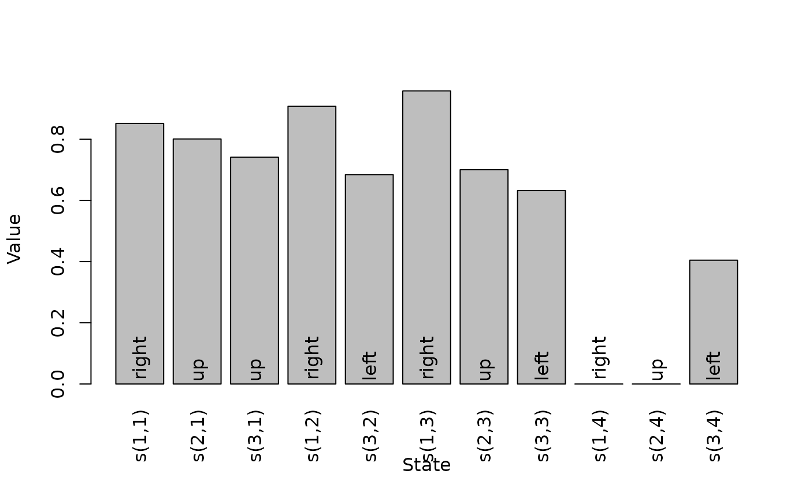
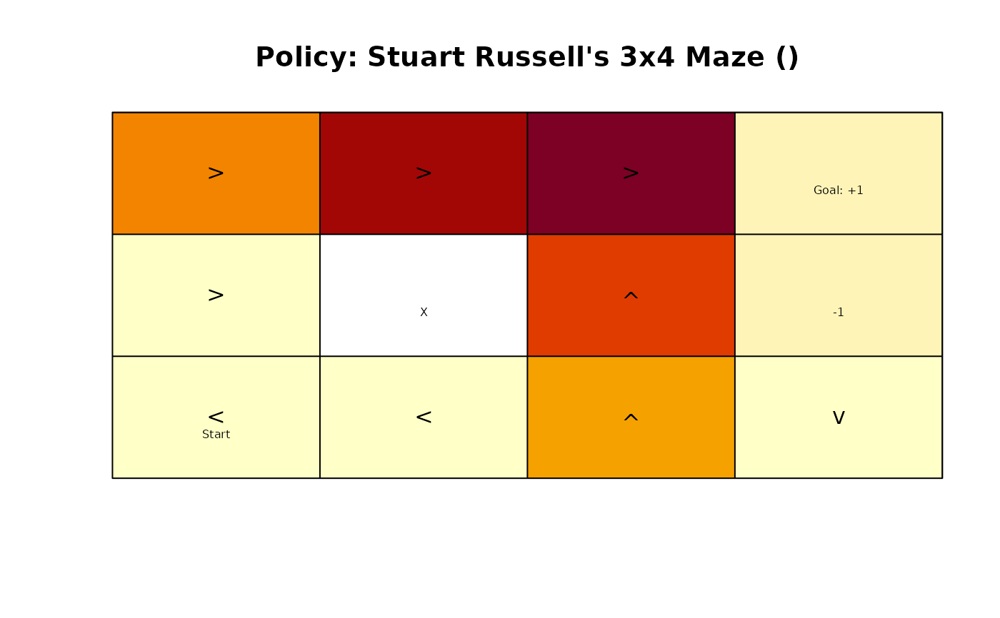
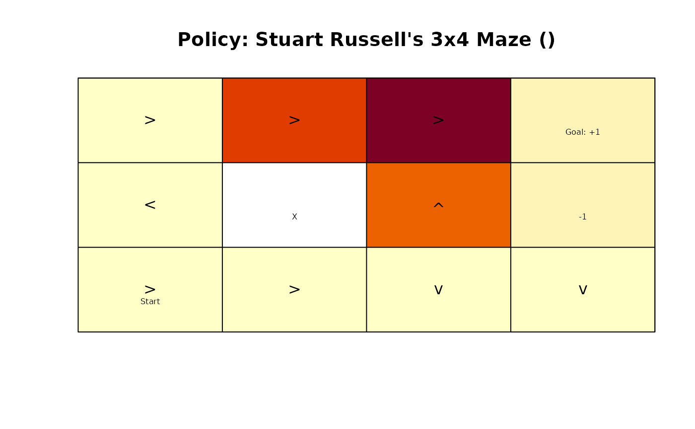
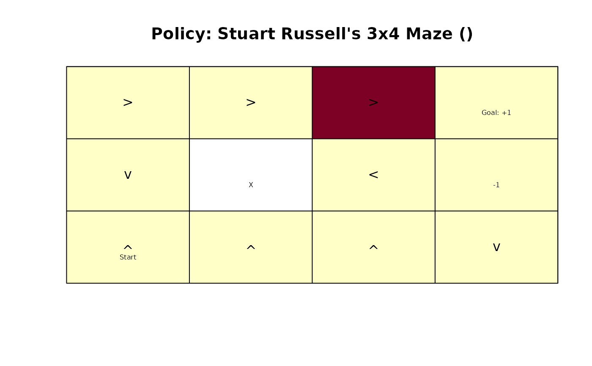
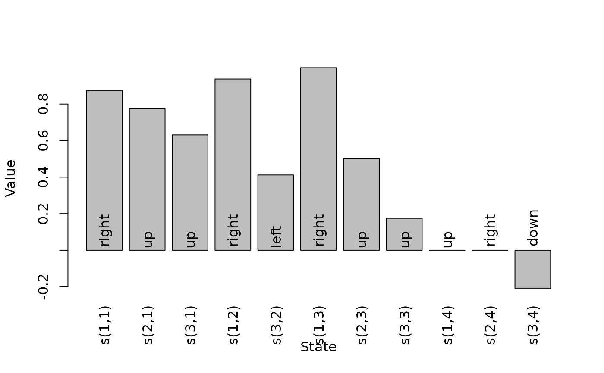
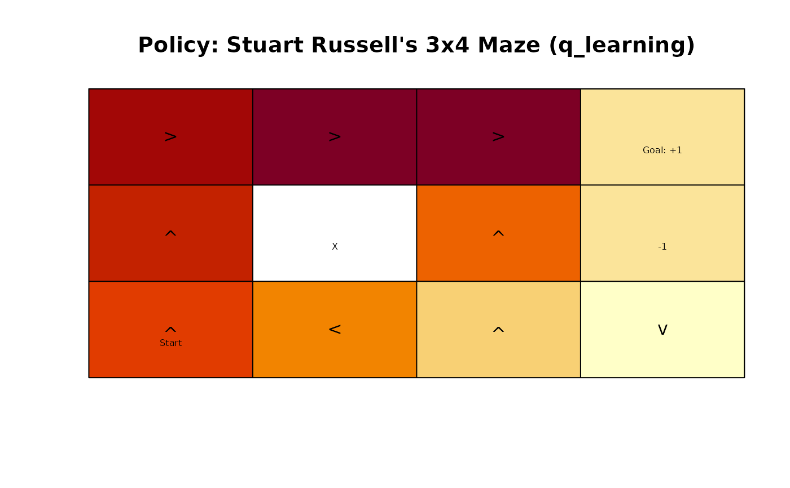

Implementation of value iteration, modified policy iteration and other methods based on reinforcement learning techniques to solve finite state space MDPs.
Usage
solve_MDP(model, method = "value", ...)
solve_MDP_DP(
model,
method = "value_iteration",
horizon = NULL,
discount = NULL,
N_max = 1000,
error = 0.01,
k_backups = 10,
U = NULL,
verbose = FALSE
)
solve_MDP_TD(
model,
method = "q_learning",
horizon = NULL,
discount = NULL,
alpha = 0.5,
epsilon = 0.1,
N = 100,
U = NULL,
verbose = FALSE
)Arguments
- model
an MDP problem specification.
- method
string; one of the following solution methods:
'value_iteration','policy_iteration','q_learning','sarsa', or'expected_sarsa'.- ...
further parameters are passed on to the solver function.
- horizon
an integer with the number of epochs for problems with a finite planning horizon. If set to
Inf, the algorithm continues running iterations till it converges to the infinite horizon solution. IfNULL, then the horizon specified inmodelwill be used.- discount
discount factor in range \((0, 1]\). If
NULL, then the discount factor specified inmodelwill be used.- N_max
maximum number of iterations allowed to converge. If the maximum is reached then the non-converged solution is returned with a warning.
- error
value iteration: maximum error allowed in the utility of any state (i.e., the maximum policy loss) used as the termination criterion.
- k_backups
policy iteration: number of look ahead steps used for approximate policy evaluation used by the policy iteration method.
- U
a vector with initial utilities used for each state. If
NULL, then the default of a vector of all 0s is used.- verbose
logical, if set to
TRUE, the function provides the output of the solver in the R console.- alpha
step size in
(0, 1].- epsilon
used for \(\epsilon\)-greedy policies.
- N
number of episodes used for learning.
Value
solve_MDP() returns an object of class POMDP which is a list with the
model specifications (model), the solution (solution).
The solution is a list with the elements:
policya list representing the policy graph. The list only has one element for converged solutions.convergeddid the algorithm converge (NA) for finite-horizon problems.deltafinal \(\delta\) (value iteration and infinite-horizon only)iterationsnumber of iterations to convergence (infinite-horizon only)
Details
Implemented are the following dynamic programming methods (following Russell and Norvig, 2010):
Modified Policy Iteration starts with a random policy and iteratively performs a sequence of
approximate policy evaluation (estimate the value function for the current policy using
k_backupsand functionMDP_policy_evaluation()), andpolicy improvement (calculate a greedy policy given the value function). The algorithm stops when it converges to a stable policy (i.e., no changes between two iterations).
Value Iteration starts with an arbitrary value function (by default all 0s) and iteratively updates the value function for each state using the Bellman equation. The iterations are terminated either after
N_maxiterations or when the solution converges. Approximate convergence is achieved for discounted problems (with \(\gamma < 1\)) when the maximal value function change for any state \(\delta\) is \(\delta \le error (1-\gamma) / \gamma\). It can be shown that this means that no state value is more than \(error\) from the value in the optimal value function. For undiscounted problems, we use \(\delta \le error\).The greedy policy is calculated from the final value function. Value iteration can be seen as policy iteration with truncated policy evaluation.
Note that the policy converges earlier than the value function.
Implemented are the following temporal difference control methods described in Sutton and Barto (2020). Note that the MDP transition and reward models are only used to simulate the environment for these reinforcement learning methods. The algorithms use a step size parameter \(\alpha\) (learning rate) for the updates and the exploration parameter \(\epsilon\) for the \(\epsilon\)-greedy policy.
If the model has absorbing states to terminate episodes, then no maximal episode length
(horizon) needs to
be specified. To make sure that the algorithm does finish in a reasonable amount of time,
episodes are stopped after 10,000 actions with a warning. For models without absorbing states,
an episode length has to be specified via horizon.
Q-Learning is an off-policy temporal difference method that uses an \(\epsilon\)-greedy behavior policy and learns a greedy target policy.
Sarsa is an on-policy method that follows and learns an \(\epsilon\)-greedy policy. The final \(\epsilon\)-greedy policy is converted into a greedy policy.
Expected Sarsa: We implement an on-policy version that uses the expected value under the current policy for the update. It moves deterministically in the same direction as Sarsa moves in expectation. Because it uses the expectation, we can set the step size \(\alpha\) to large values and even 1.
References
Russell, S., Norvig, P. (2021). Artificial Intelligence: A Modern Approach. Fourth edition. Prentice Hall.
Sutton, R. S., Barto, A. G. (2020). Reinforcement Learning: An Introduction. Second edition. The MIT Press.
See also
Other solver:
solve_POMDP(),
solve_SARSOP()
Other MDP:
MDP(),
MDP2POMDP,
MDP_policy_functions,
accessors,
actions(),
add_policy(),
gridworld,
reachable_and_absorbing,
regret(),
simulate_MDP(),
transition_graph(),
value_function()
Examples
data(Maze)
Maze
#> MDP, list - Stuart Russell's 3x4 Maze
#> Discount factor: 1
#> Horizon: Inf epochs
#> Size: 11 states / 4 actions
#> Start: 0, 0, 1, 0, 0, 0, 0, 0, 0, 0, 0
#>
#> List components: ‘name’, ‘discount’, ‘horizon’, ‘states’, ‘actions’,
#> ‘transition_prob’, ‘reward’, ‘info’, ‘start’
# use value iteration
maze_solved <- solve_MDP(Maze, method = "value_iteration")
maze_solved
#> MDP, list - Stuart Russell's 3x4 Maze
#> Discount factor: 1
#> Horizon: Inf epochs
#> Size: 11 states / 4 actions
#> Start: 0, 0, 1, 0, 0, 0, 0, 0, 0, 0, 0
#> Solved:
#> Method: ‘value iteration’
#> Solution converged: TRUE
#>
#> List components: ‘name’, ‘discount’, ‘horizon’, ‘states’, ‘actions’,
#> ‘transition_prob’, ‘reward’, ‘info’, ‘start’, ‘solution’
policy(maze_solved)
#> state U action
#> 1 s(1,1) 0.8513071 right
#> 2 s(2,1) 0.8007595 up
#> 3 s(3,1) 0.7409561 up
#> 4 s(1,2) 0.9077989 right
#> 5 s(3,2) 0.6842791 left
#> 6 s(1,3) 0.9578061 right
#> 7 s(2,3) 0.7002680 up
#> 8 s(3,3) 0.6321148 left
#> 9 s(1,4) 0.0000000 right
#> 10 s(2,4) 0.0000000 up
#> 11 s(3,4) 0.4045407 left
# plot the value function U
plot_value_function(maze_solved)

# Maze solutions can be visualized
gridworld_plot_policy(maze_solved)
 # use modified policy iteration
maze_solved <- solve_MDP(Maze, method = "policy_iteration")
policy(maze_solved)
#> state U action
#> 1 s(1,1) 0.8515582 right
#> 2 s(2,1) 0.8015580 up
#> 3 s(3,1) 0.7452989 up
#> 4 s(1,2) 0.9078082 right
#> 5 s(3,2) 0.6952778 left
#> 6 s(1,3) 0.9578082 right
#> 7 s(2,3) 0.7002740 up
#> 8 s(3,3) 0.6513430 left
#> 9 s(1,4) 0.0000000 left
#> 10 s(2,4) 0.0000000 down
#> 11 s(3,4) 0.4276983 left
# finite horizon
maze_solved <- solve_MDP(Maze, method = "value_iteration", horizon = 3)
policy(maze_solved)
#> [[1]]
#> state U action
#> 1 s(1,1) 0.41248 right
#> 2 s(2,1) -0.12000 right
#> 3 s(3,1) -0.12000 left
#> 4 s(1,2) 0.77088 right
#> 5 s(3,2) -0.12000 left
#> 6 s(1,3) 0.92808 right
#> 7 s(2,3) 0.60712 up
#> 8 s(3,3) 0.33888 up
#> 9 s(1,4) 0.00000 right
#> 10 s(2,4) 0.00000 right
#> 11 s(3,4) -0.12000 down
#>
#> [[2]]
#> state U action
#> 1 s(1,1) -0.0800 right
#> 2 s(2,1) -0.0800 left
#> 3 s(3,1) -0.0800 right
#> 4 s(1,2) 0.5856 right
#> 5 s(3,2) -0.0800 right
#> 6 s(1,3) 0.8672 right
#> 7 s(2,3) 0.4936 up
#> 8 s(3,3) -0.0800 down
#> 9 s(1,4) 0.0000 left
#> 10 s(2,4) 0.0000 up
#> 11 s(3,4) -0.0800 down
#>
#> [[3]]
#> state U action
#> 1 s(1,1) -0.040 right
#> 2 s(2,1) -0.040 down
#> 3 s(3,1) -0.040 up
#> 4 s(1,2) -0.040 right
#> 5 s(3,2) -0.040 up
#> 6 s(1,3) 0.792 right
#> 7 s(2,3) -0.040 left
#> 8 s(3,3) -0.040 up
#> 9 s(1,4) 0.000 up
#> 10 s(2,4) 0.000 up
#> 11 s(3,4) -0.040 down
#>
gridworld_plot_policy(maze_solved, epoch = 1)
# use modified policy iteration
maze_solved <- solve_MDP(Maze, method = "policy_iteration")
policy(maze_solved)
#> state U action
#> 1 s(1,1) 0.8515582 right
#> 2 s(2,1) 0.8015580 up
#> 3 s(3,1) 0.7452989 up
#> 4 s(1,2) 0.9078082 right
#> 5 s(3,2) 0.6952778 left
#> 6 s(1,3) 0.9578082 right
#> 7 s(2,3) 0.7002740 up
#> 8 s(3,3) 0.6513430 left
#> 9 s(1,4) 0.0000000 left
#> 10 s(2,4) 0.0000000 down
#> 11 s(3,4) 0.4276983 left
# finite horizon
maze_solved <- solve_MDP(Maze, method = "value_iteration", horizon = 3)
policy(maze_solved)
#> [[1]]
#> state U action
#> 1 s(1,1) 0.41248 right
#> 2 s(2,1) -0.12000 right
#> 3 s(3,1) -0.12000 left
#> 4 s(1,2) 0.77088 right
#> 5 s(3,2) -0.12000 left
#> 6 s(1,3) 0.92808 right
#> 7 s(2,3) 0.60712 up
#> 8 s(3,3) 0.33888 up
#> 9 s(1,4) 0.00000 right
#> 10 s(2,4) 0.00000 right
#> 11 s(3,4) -0.12000 down
#>
#> [[2]]
#> state U action
#> 1 s(1,1) -0.0800 right
#> 2 s(2,1) -0.0800 left
#> 3 s(3,1) -0.0800 right
#> 4 s(1,2) 0.5856 right
#> 5 s(3,2) -0.0800 right
#> 6 s(1,3) 0.8672 right
#> 7 s(2,3) 0.4936 up
#> 8 s(3,3) -0.0800 down
#> 9 s(1,4) 0.0000 left
#> 10 s(2,4) 0.0000 up
#> 11 s(3,4) -0.0800 down
#>
#> [[3]]
#> state U action
#> 1 s(1,1) -0.040 right
#> 2 s(2,1) -0.040 down
#> 3 s(3,1) -0.040 up
#> 4 s(1,2) -0.040 right
#> 5 s(3,2) -0.040 up
#> 6 s(1,3) 0.792 right
#> 7 s(2,3) -0.040 left
#> 8 s(3,3) -0.040 up
#> 9 s(1,4) 0.000 up
#> 10 s(2,4) 0.000 up
#> 11 s(3,4) -0.040 down
#>
gridworld_plot_policy(maze_solved, epoch = 1)

gridworld_plot_policy(maze_solved, epoch = 2)

gridworld_plot_policy(maze_solved, epoch = 3)

# create a random policy where action n is very likely and approximate
# the value function. We change the discount factor to .9 for this.
Maze_discounted <- Maze
Maze_discounted$discount <- .9
pi <- random_MDP_policy(Maze_discounted,
prob = c(n = .7, e = .1, s = .1, w = 0.1))
pi
#> state action
#> 1 s(1,1) up
#> 2 s(2,1) left
#> 3 s(3,1) down
#> 4 s(1,2) up
#> 5 s(3,2) down
#> 6 s(1,3) right
#> 7 s(2,3) up
#> 8 s(3,3) right
#> 9 s(1,4) up
#> 10 s(2,4) up
#> 11 s(3,4) up
# compare the utility function for the random policy with the function for the optimal
# policy found by the solver.
maze_solved <- solve_MDP(Maze)
MDP_policy_evaluation(pi, Maze, k_backups = 100)
#> s(1,1) s(2,1) s(3,1) s(1,2) s(3,2) s(1,3) s(2,3)
#> -0.2412912 -1.3157070 -2.0014361 0.1583648 -1.6193974 0.9578082 0.7002740
#> s(3,3) s(1,4) s(2,4) s(3,4)
#> -0.8484594 0.0000000 0.0000000 -0.9920510
MDP_policy_evaluation(policy(maze_solved), Maze, k_backups = 100)
#> s(1,1) s(2,1) s(3,1) s(1,2) s(3,2) s(1,3) s(2,3) s(3,3)
#> 0.8515562 0.8015515 0.7452441 0.9078082 0.6951230 0.9578082 0.7002740 0.6510268
#> s(1,4) s(2,4) s(3,4)
#> 0.0000000 0.0000000 0.4271197
# Note that the solver already calculates the utility function and returns it with the policy
policy(maze_solved)
#> state U action
#> 1 s(1,1) 0.8513071 right
#> 2 s(2,1) 0.8007595 up
#> 3 s(3,1) 0.7409561 up
#> 4 s(1,2) 0.9077989 right
#> 5 s(3,2) 0.6842791 left
#> 6 s(1,3) 0.9578061 right
#> 7 s(2,3) 0.7002680 up
#> 8 s(3,3) 0.6321148 left
#> 9 s(1,4) 0.0000000 up
#> 10 s(2,4) 0.0000000 down
#> 11 s(3,4) 0.4045407 left
# Learn a Policy using Q-Learning
maze_learned <- solve_MDP(Maze, method = "q_learning", N = 100)
maze_learned
#> MDP, list - Stuart Russell's 3x4 Maze
#> Discount factor: 1
#> Horizon: Inf epochs
#> Size: 11 states / 4 actions
#> Start: 0, 0, 1, 0, 0, 0, 0, 0, 0, 0, 0
#> Solved:
#> Method: ‘q_learning’
#> Solution converged: NA
#>
#> List components: ‘name’, ‘discount’, ‘horizon’, ‘states’, ‘actions’,
#> ‘transition_prob’, ‘reward’, ‘info’, ‘start’, ‘solution’
maze_learned$solution
#> $method
#> [1] "q_learning"
#>
#> $alpha
#> [1] 0.5
#>
#> $epsilon
#> [1] 0.1
#>
#> $N
#> [1] 100
#>
#> $Q
#> up right down left
#> s(1,1) -0.13398437 0.8751263 0.21926651 0.4246332
#> s(2,1) 0.77690620 0.4262546 0.42962329 0.4195307
#> s(3,1) 0.63113978 0.4202776 0.42658245 0.3951377
#> s(1,2) 0.60225789 0.9371747 0.71766455 0.4858358
#> s(3,2) 0.02317396 -0.1538525 0.03764821 0.4118647
#> s(1,3) 0.66049909 0.9987774 0.31962884 0.6569041
#> s(2,3) 0.50311904 -0.5000000 -0.25192497 -0.2715949
#> s(3,3) 0.17500658 -0.1575000 -0.14291016 -0.1571289
#> s(1,4) 0.00000000 0.0000000 0.00000000 0.0000000
#> s(2,4) 0.00000000 0.0000000 0.00000000 0.0000000
#> s(3,4) -0.50000000 -0.6125000 -0.21046875 -0.5418750
#>
#> $converged
#> [1] NA
#>
#> $policy
#> $policy[[1]]
#> state U action
#> 1 s(1,1) 0.8751263 right
#> 2 s(2,1) 0.7769062 up
#> 3 s(3,1) 0.6311398 up
#> 4 s(1,2) 0.9371747 right
#> 5 s(3,2) 0.4118647 left
#> 6 s(1,3) 0.9987774 right
#> 7 s(2,3) 0.5031190 up
#> 8 s(3,3) 0.1750066 up
#> 9 s(1,4) 0.0000000 up
#> 10 s(2,4) 0.0000000 right
#> 11 s(3,4) -0.2104688 down
#>
#>
policy(maze_learned)
#> state U action
#> 1 s(1,1) 0.8751263 right
#> 2 s(2,1) 0.7769062 up
#> 3 s(3,1) 0.6311398 up
#> 4 s(1,2) 0.9371747 right
#> 5 s(3,2) 0.4118647 left
#> 6 s(1,3) 0.9987774 right
#> 7 s(2,3) 0.5031190 up
#> 8 s(3,3) 0.1750066 up
#> 9 s(1,4) 0.0000000 up
#> 10 s(2,4) 0.0000000 right
#> 11 s(3,4) -0.2104688 down
plot_value_function(maze_learned)

gridworld_plot_policy(maze_learned)
